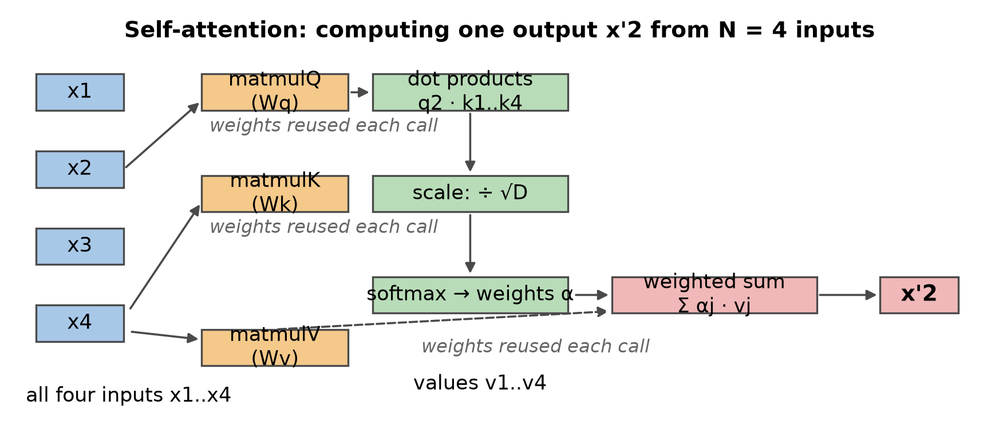
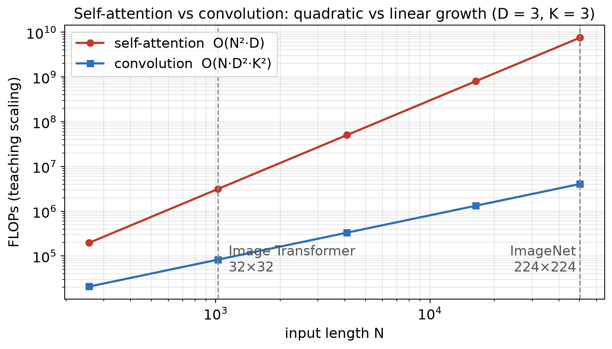
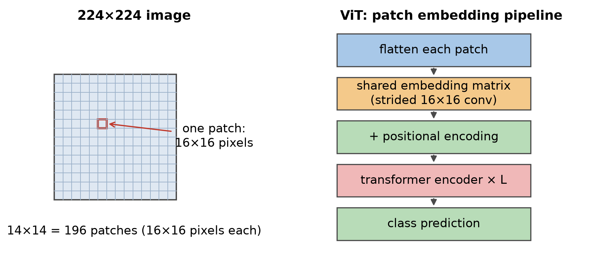

第 5 章 · 注意力进场
Transformer 是什么
2017 年为机器翻译提出。
把注意力机制加进深度网络。
循环网络逐词读，它整段一次算。
后来成为 NLP 主流，并反超 CNN。
依据：原书第 322–323 页
本集三步
第一步：自注意力怎么转
第二步：为什么能进视觉
第三步：ViT 怎么切块
正课第四十三集
01 / 9
动机 · 归纳偏置
卷积不慢，慢在默认假设
卷积天生并行，问题不在速度。
归纳偏置：写进模型的默认假设。
默认邻近像素更重要。
感受野靠层数增长；大数据下偏置可能拖后腿。
依据：原书第 323 页
苦涩的一课
萨顿：学会利用算力
胜过把人类知识写死
也有人主张小数据学习
正课第四十三集
02 / 9
核心零件 · 自注意力
自注意力：每个单元都提问
注意力施加到一层全部 N 个单元。
每个单元同时当提问者和回答者。
字典类比：键值对加一个查询。
神经网络版按相似度给权重。
依据：原书第 323–324 页
从字典到向量
键和查询都是实值向量
输出是值的加权和
权重看查询与各键的距离
对应散乱数据插值（4.1.1 节）
正课第四十三集
03 / 9
加权方式 · 缩放点积
缩放点积：除以根号 D
查询与每个键做点积。
除以根号 D，D 是向量维数。
softmax 把分数变成权重。
不缩放，方差随维数涨，梯度消失。
依据：原书第 324 页
y = softmax(qKᵀ/√D)ᵀ V
式 5.77；K、V 是键和值按行堆叠的矩阵
正课第四十三集
04 / 9
三权重与 transformer 块
三份权重，拼出注意力机器
查询、键、值各一份权重矩阵。
三份矩阵每次调用都重复使用。
权重看输入现场生成，不是固定的。
块内还有位置编码、多头、归一化、残差。
依据：原书第 325–326 页；Figure 5.56 语义

自注意力单输出计算图：三权重投影→点积→缩放→softmax→加权和｜程序生成，未用教材或论文原图
正课第四十三集
05 / 9
代价账 · FLOPs
平方对线性：注意力的代价
自注意力约 N²D 次浮点运算。
卷积约 ND²K² 次浮点运算。
224×224 逐像素，N 等于 50176。
实验档估账：注意力是卷积千倍以上。
依据：原书第 326 页；本集实验

自注意力平方增长对卷积线性增长（数量级口径）｜程序生成，未用教材或论文原图
正课第四十三集
06 / 9
突破 · ViT
ViT：把图切成 196 块
224×224 图切 16×16 小块，共 196 块。
每块拉平，过共享嵌入矩阵。
等价于步幅 16×16 的卷积。
加位置编码，送进 Transformer。
依据：原书第 326–327 页；Figure 5.57 语义

224×224 切 14×14=196 patch→共享嵌入→位置编码→编码器｜程序生成，未用教材或论文原图
正课第四十三集
07 / 9
混合与谱系
混合与谱系：九类任务
DETR：ResNet 骨干加 Transformer。
大目标检测变好，靠全局关系。
谱系覆盖九个视觉任务。
新论文还在快速增加。
依据：原书第 327–328 页
九个任务
分类、检测、预训练
分割、姿态、超分辨率
上色、生成、视频分类
正课第四十三集
08 / 9
收束 · 下一集
四件事与两道口算
自注意力：权重现场生成。
缩放点积：除根号 D 保梯度。
ViT：196 块换来大图。
下一集：生成模型与 GAN 谱系。
依据：原书第 328 页
两道口算
224×224 切 16×16，几块？
逐像素注意力，约是卷积几倍？
答案：196 块；一千八百多倍
正课第四十三集
09 / 9